Dado que 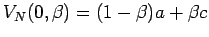 y que 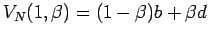 entonces tenemos
Es decir, en un número trapezoidal el valor representativo de cada  corte puede calcularse como la interpolación lineal entre los valores representativos de los
corte puede calcularse como la interpolación lineal entre los valores representativos de los  cortes correspondientes a 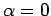 y .
cortes correspondientes a 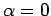 y .
Ahora tenemos:
Es decir, en este caso el valor representativo del número difuso es el valor representativo del  corte correspondiente a
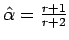. Nótese que
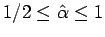
corte correspondiente a
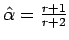. Nótese que
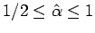
Ejemplo: Dados dos número trapezoidales 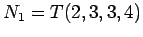 y 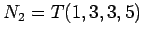, ¿cuál de los dos números es mayor?. Seleccionemos 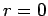...
La respuesta depende del optimismo  . Por ejemplo, si 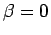 tenemos
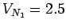 y
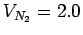, por lo tanto 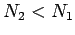. Sin embargo, si 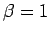 tenemos
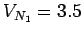 y
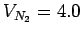 y por lo tanto 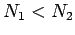. Si tomamos 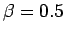 tenemos
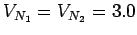 y diriamos que ninguno de los números es mayor que el otro.
. Por ejemplo, si 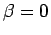 tenemos
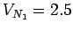 y
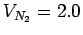, por lo tanto 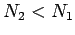. Sin embargo, si 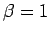 tenemos
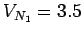 y
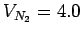 y por lo tanto 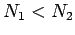. Si tomamos 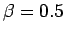 tenemos
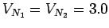 y diriamos que ninguno de los números es mayor que el otro.